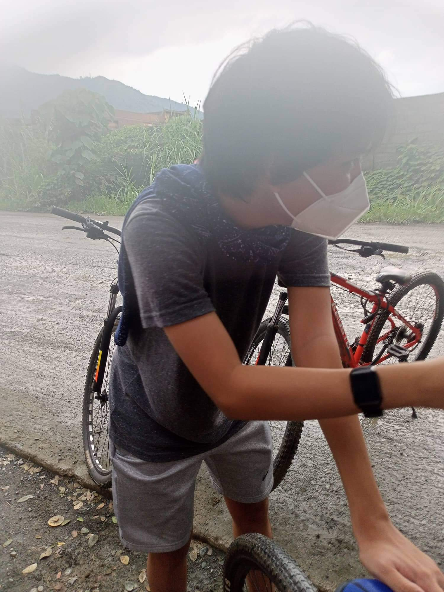
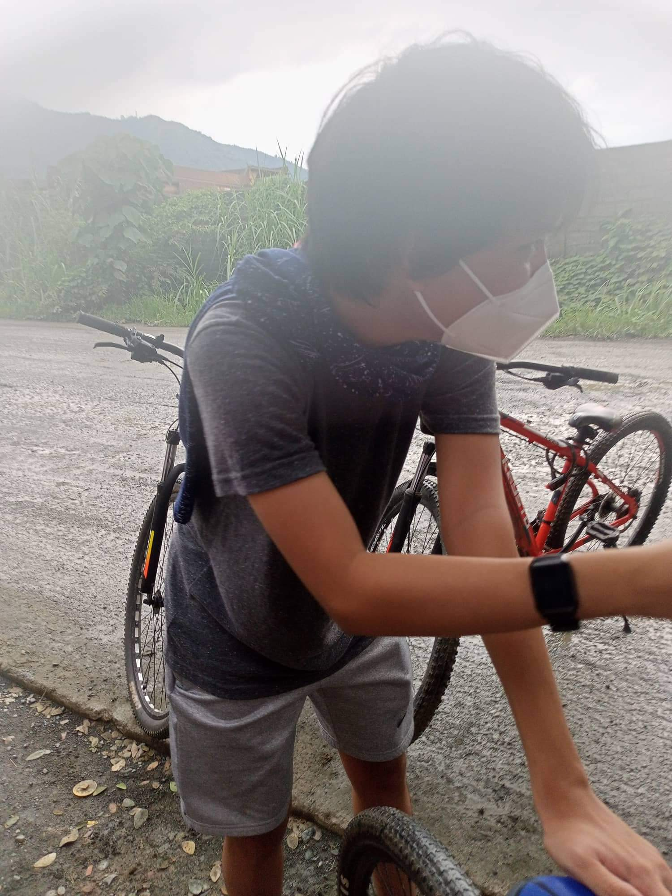

ParagonNet
ParagonNetmade by zaiden
Personal Development - STEM 11 |
Robert Ramos
Last Updated on: 04/15/24 - 3:50PM
The positive things/memories I remember from my past are being happy most of the times without a problem to worry about. Feeling like I was being loved by most and for every minute. Graduating pre-school to elementary. Being surrounded by loving family members.
The times I felt much loved was back when I was at the age below 13. I say that because I was still good in terms of morals and in general being kind compared to now which I can't explain what I really am right now. I get loved by my grandma and parents which at the time I took for granted, but now that I'm at this age, there's some part of me that wants to go back and make my relation with my parents better.
I'm grateful that even though I was unruly most of the time, they would still console me when they scold me and hit me with stuff :) I'm also grateful to the people who were by my side even just for some times. I'm grateful that I got a taste of what it's like to be in a circle of friends, even if it only lasted for less than a year, it still helped me be more social for some parts today.
For me, I think that these positive experiences shaped me to become independent when I want to know something or am curious about something. It shaped me to be forward on some things and be silent on others. It made me feel grateful about the life that was given to me, even if I still don't know what my true purpose is, it still made me appreciate my life.
I'm kinda blurry on my past memories now, but I do remember some, like questioning why my mom was not coming home here in Montalban, which made me realize that there's some issue or problem within our family.
There was also times when most of my classmates would be having fun while I just sat there silently on the side, thinking about what I can do to have that kind of social relationship with others.
There are also the rare occasion where I had a crush on someone and being shunned, well not technically "shunned" but close to that word, which now that I look back at is pretty cringe-inducing 😬.
The final, MAJOR, unpleasant thing that happened to me was ironically being in a friend group. An instability was brewing which by the time I had noticed it, it was already too late to fix all of it back together, and now, I'm back to being the lonely, sometimes just going in another friend group to another, but without a permanent group to hang out with, like a stray tumbleweed, strolling through the desert, without anything to attach with.
Not really, I didn't really have an exciting or exhilirating childhood where I ventured into something that would make for a traumatic experience, I might even say that my childhood experience was below average for the time.
Like I said in the previous question, I really did not have any traumatic or really negative experience other than the unpleasant things I already listed on the previous questions.
If we're talking about the unpleasant experiences, then definitely the friend group experience at the start was like a new world had opened up for me, but towards the end of it all, it felt like that new world and my old world where I had been since the start was starting to crumble and fall into disarray. Thankfully, I still had some connections with other people which slowed that crumbling and made my emotions and feelings stabilize before those few connections were ultimately ended as well. Overall, I'd say that those negative experiences made me worse rather than be a better person, it just made me more of a closed-person, who doesn't want to open anything to anyone ever again.
Like I said in my previous answer, the friend group experience really did a mark on my life, a good and a bad mark. Those 8-9 months of my life was the first time I experienced that kind of social change in my life, going out almost like everyday, playing with another person rather than playing alone, and everything in between. But once it all ended, my life went back to the old, boring, lonely life I had lived since my childhood days.
I definitely gained a lot of bad personalities resulting from my bad experiences, such as having lower temper than my old self, probably my lowest temper yet. Straying away more from my ethics and morals to just be in a circle of friends. Losing my built confidence to be myself and be social when I'm around other people.
It really feels like I lost most of my good side, and now I'm just not the same person as I was, the sticking to my morals person, the honest person, the composed person, the early-sleeper person.
Definitely not, I became weaker is what I feel like what happened to me as I look back at it today. The series of events leading up to the collapse of the friend group and after, made me lose friends, confidence, and a whole lot more which I can't explain, and maybe even a best friend, if he even did consider me as one.
[1] These slides were designed and coded by me.
[2] All pictures excluding the 1st and 2nd slides is sorted by oldest to newest date.
[3] The logo used for the PerDev logo was artificially created.
[4] The Paragon Suite (ParagonNet, g10.pnet, Paragon Streaming Service, etc.) is owned and created by zaiden
17


 
